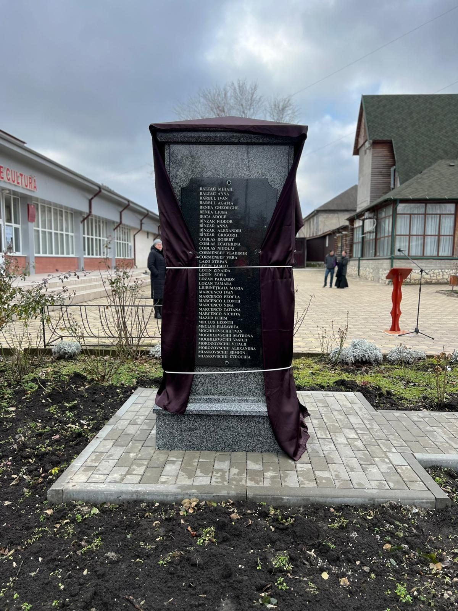
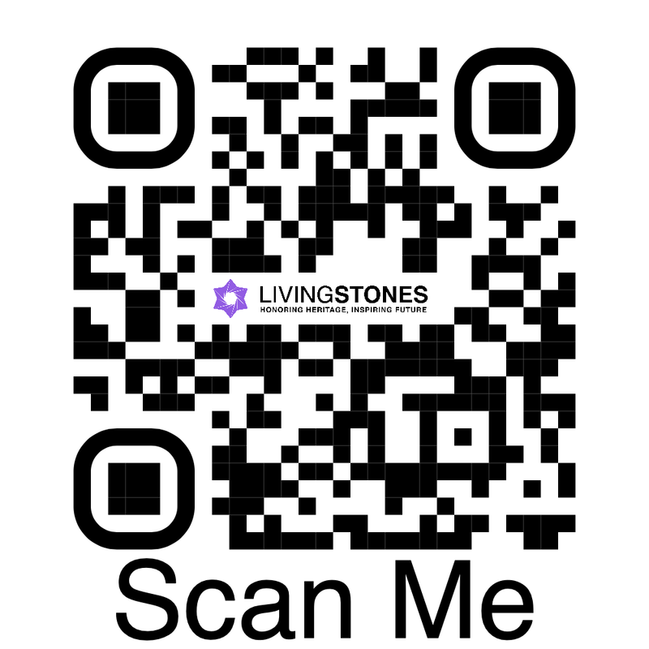

Cupcini Righteous Amongst the Nations of Moldova
In memory of the 79 Moldavian non-Jewish individuals who risked their lives to save Jews during the Holocaust. This memorial was erected with the efforts and thanks to the Nemurire and the LivingStones Associations.
To support the work of LivingStones please consider making a donation
DonateBackground
Righteous Among the Nations
Honoring Humanity in the Darkest of Times
The term "Righteous Among the Nations" honors the non-Jewish individuals who bravely risked their lives to save Jews during the Holocaust. These remarkable men and women exemplified profound moral conviction and humanity, confronting immense danger and persecution from the Nazi regime. This title, awarded by the State of Israel through Yad Vashem , the World Holocaust Remembrance Center, serves to recognize and celebrate their extraordinary bravery and selflessness.
The Origins of the Title
In 1963, Yad Vashem established the concept of the Righteous Among the Nations, recognizing non-Jews who risked their lives to save Jews during the Holocaust. The initiative aimed to honor those courageous individuals who, despite the ever-present fear and oppression of the Nazi regime, defied authority and risked their lives to aid the persecuted. The Righteous Among the Nations, a monument to human kindness, stands as a testament to the capacity for goodness and compassion, even while facing unimaginable suffering and despair.
Criteria for Recognition
To be acknowledged as Righteous Among the Nations, certain standards need to be fulfilled.
-
Risk to Life: The individual must have risked their life, liberty, or safety to rescue Jews.
-
Intent: It must be demonstrably clear that the actions stemmed from selfless humanitarian motives, entirely free from any material incentives.
-
Evidence: There must be credible testimony or documentation verifying the rescue efforts.
-
Non-Jewish: The rescuer must not be of Jewish descent.
Notable Examples
On every International Holocaust Remembrance Day, we must remember the righteous too. While the number of people saving Jews remained scarce, Yad Vashem has recognized 28,486 Righteous Gentiles (until 2025). These individuals risked their lives to save Jewish individuals, whether they were friends, neighbors, or strangers. The impact extended to all Jewish communities, irrespective of their size.
Bessarabia was under Romanian rule from the end of World War I until 1940, during which approximately 200,000 Jews resided there. By May 1942, only 227 Jews were left in Bessarabia. In 1941, 79 courageous individuals took extraordinary risks by providing forged documents and illegal transfer to safer territories, hiding them, supplying basic goods, and arranging shelter and assistance to those in desperate need to save their Jewish neighbors from the horrors of the Holocaust.
One such example is the story of the priest Gheorghe Benea and his wife Liuba, who risked their lives to save 26 Jewish inhabitants from the villages of Rīşcani.
Another notable figure is Myaskovski Semyon & Yevdokia, who used their knowledge of the terrain to lead Jewish refugees across perilous routes to neighboring countries, where they had a better chance of survival.
These acts of heroism by Moldovan citizens during World War II exemplify the profound impact of individual courage and compassion, reinforcing the legacy of the Righteous Among the Nations in Moldova. Their stories serve as powerful reminders of the capacity for goodness in humanity, even in the face of unimaginable adversity.
Let us honor their memory and continue to educate future generations about their invaluable contributions to humanity.
It’s also important to remember the Righteous Gentiles whose own descendants may not know what they did and at what risk to themselves. Those who they saved, and their descendants, owe their lives today to those people who they never met.
Click here to learn more about the Righteous people of Moldova: https://collections.yadvashem.org/en/righteous/search-results/moldova?page=1
Click here to write to LivingStones if you know someone of your family saved Jewish lives during
Motivations Behind Saving Jews During World War II
What motivates people like Fyodor and Anna Bynzar, their son Aleksandr, and their grandson Grigoriy (Katranik, Făleşti County), Leontiy and Yelizaveta Meklush (Glingeni), Stephan Lazo (Napadeni), or the priest George Benya and his wife Lyuba (Varatic) to risk their lives to rescue others? Neither their education nor their professional pursuits were the cause.
Samuel P. Oliner , a professor of sociology and the lead author of a groundbreaking study interviewing 406 rescuers entitled “The Altruistic Personality: Rescuers of Jews in Nazi Europe” identified three primary types of motivations that the rescuers had:
-
Empathy
-
Ethical principles
-
Loyalty to a group that was committed to rescue
Oliner determined that the upbringing of rescuers was often a key factor in shaping their responses. The influence of parental values was substantial. the parents of rescuers educated their children through reasoning instead of physical punishment and emphasized independence and empathy for others.
Their motivations were deeply rooted in a complex web of personal beliefs, moral principles, and a profound sense of humanity.
They believed in the inherent worth and dignity of every human being, regardless of race or religion. For individuals like Fyodor and Anna Bynzar, their son Aleksandr, and their grandson Grigoriy, the decision to hide Jewish families stemmed from an unwavering belief in doing what was right, even in the face of grave danger. These rescuers often had a deep sense of justice and could not stand idly by while innocent people were persecuted.
Religious Beliefs
Religious faith played a significant role in motivating some rescuers. Many were guided by their spiritual beliefs, which emphasized the importance of compassion, charity, and protecting the vulnerable. For instance, Father Gheorghe Benea and his wife, Liuba, whose Christian principles of neighborly love and charitable assistance motivated their actions.
Personal Connections and Relationships
Personal connections and relationships with Jews also influenced the decision to help. Some rescuers had Jewish friends, neighbors, or colleagues, and their desire to protect them was fueled by these bonds. The strong sense of loyalty and empathy they felt towards their Jewish acquaintances compelled them to provide shelter, assistance, and safe passage. For Stephan Lazo, his familiarity with Jewish refugees and his knowledge of the terrain enabled him to lead them to safety, driven by a personal commitment to their survival.
Humanitarianism and Altruism
A deep sense of humanitarianism and altruism was another powerful motivator. Many rescuers were driven by a genuine concern for the well-being of others and a desire to alleviate suffering. They were moved by the plight of the Jews and felt a moral obligation to act. This selfless dedication to helping others, even at great personal risk, demonstrated the best of human nature. The acts of heroism by these 79 Moldovan citizens highlight the capacity for goodness and compassion in humanity.
Defiance Against Oppression
For some, the decision to save Jews was also an act of defiance against the oppressive regime. Rescuers were often motivated by a profound sense of resistance against tyranny and injustice. By aiding Jews, they actively opposed the dehumanizing policies and actions of the Nazis. This resistance was not only a personal stance but also a broader fight for human dignity and freedom.
In conclusion, the motivations behind saving Jews during World War II were multifaceted and deeply personal. The courageous actions of these individuals were driven by a combination of moral convictions, religious beliefs, personal connections, humanitarianism, and defiance against oppression.
This memorial is a symbol of their bravery and an enduring reminder of their legacy. It is our duty to ensure that the stories of these righteous individuals are never forgotten. By educating future generations about their courageous actions, we teach them the importance of standing up for what is right, even in the face of overwhelming adversity.
Today, as we unveil this memorial, we are reminded of the timeless lessons these heroes imparted through their deeds. Their actions teach us the importance of empathy and compassion in our interactions with others. By understanding and empathizing with the suffering of others, we can foster a more inclusive and supportive society.
January 26, 2025
Location and QR Code
